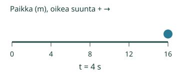
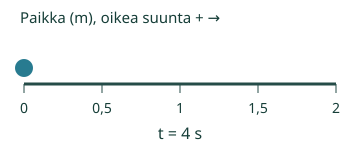

Aava seuraa mitattavan pisteen nopeutta.
Huomaan, milloin nopeus muuttuu.
Mistä tämä nähdään?
Nopeus voi muuttua, vaikka lähtö on paikallaan
Liikuta leluvaunua suoraa viivaa pitkin. Ensin hitaasti, sitten nopeammin. Nopeusmittarin lukema muuttuu. Mallin sininen piste esittää yhtä mitattavaa kohtaa, ei Aavan askelia. Oikealle on plus, vasemmalle miinus.
Lähtö: nopeudet 0, 2, 4, 6 ja 8 m/s hetkillä 0, 1, 2, 3 ja 4 s. Jokaisessa sekunnissa muutos on +2 m/s. Kiihtyvyys on +2 m/s². Hetken 4 s nopeus 8 m/s ei ole kiihtyvyys.
Jarrutuskin on nopeuden muutosta
Oikealle kulkevan pisteen nopeudet ovat 8, 6, 4, 2 ja 0 m/s. Muutos on −2 m/s jokaisessa sekunnissa: a = −2 m/s². Suuri tasainen nopeus 5 m/s taas antaa a = 0. Kiihtyvyys ei tarkoita vain kovaa vauhtia.

Lähtömalli, jarrutusmalli ja tasainen 4 m/s malli päätyvät kaikki paikkaan 16 m hetkellä 4 s. Kiihtyvyydet ovat silti +2, −2 ja 0 m/s². Loppupaikka tai pelkkä liikkuminen ei siis ratkaise kiihtyvyyttä.
Ennakoi: kun nopeus on hetkellisesti nolla, täytyykö kiihtyvyydenkin olla nolla? Tutki lisämallia Suunnanvaihto.
Kokeile itse
Oikealle liikkuvan pisteen nopeus pienenee 8 m/s:sta nollaan 4 sekunnissa. Muuttuuko nopeus tämän välin aikana?
Ajattelun tueksi
Katso nopeuksia, älä vain paikkaa. Vähennä myöhemmästä nopeudesta aiempi yhtä pitkän ajan päästä. Esimerkiksi0→2 m/s yhden sekunnin aikana on muutos+2 m/s. Usean sekunnin koko muutos jaetaan sekuntien määrällä. Kiihtyvyys kuvaa muutosta, ei loppunopeutta.
Tässä tarkistetaan nopeuden muutoksen tunnistaminen; numeerista kiihtyvyyslaskua ei vaadita. Tehtävän tiedot riittävät vastaamiseen. Malli on erillinen vapaaehtoinen tutkimus, eikä toistoa tarvitse katsoa loppuun.
Lisää tutkittavaa
Suunnanvaihtomallissa v=2−t (m/s), a=−1 m/s². Hetkellä2 s v=0, mutta a ei ole0. Sen jälkeen piste liikkuu vasemmalle yhä suuremmalla vauhdilla. Miinuskiihtyvyys ei siis aina tarkoita hidastumista: merkki kertoo suunnan valitulla akselilla.

Yleisesti myös suunnan muuttuminen kaarteessa on kiihtyvyyttä, vaikka vauhdin suuruus säilyisi. Tämän sivun laskettava malli on vain suora yksiulotteinen liike, ei kaarresimulaatio.
Opettajalle ja ilman ruutua
Luokat7–9. Kanoninen rooli atomic. Tavoite: Tunnistaa nopeuden muutoksen ja muuttumattomuuden, myös jarrutuksen; tulkitsee tasaisen nopeusmuutoksen sekuntia kohti ilmoitetulla yksiulotteisella mallilla. Required-esitietoryhmät säilyvät: PHY79-SPEED-CONCEPT. Vahvat tuet eivät muutu lisäporteiksi.
Pyydä vertaamaan mittarin lukemia yhtä pitkien aikojen välein. Kokeile leluvaunulla ensin tasaista liikettä ja sitten jarrutusta. Ihminen havainnoi oikeaa liikettä; ruudun laskettu piste ei ole tehty fyysinen mittaus. Etumerkit ja suunta opetetaan tässä eksplisiittisesti.
Tämä sivu toteuttaa kuusi nimettyä yksiulotteista tasaisen kiihtyvyyden mallia. Aika on0–4 s, nopeus metreinä sekunnissa ja kiihtyvyys m/s². Myös tasainen liike ja lepo ovat mukana kiihtyvyyden nolla-arvolla. Ei kitkaa,2D-kaarteita, mielivaltaista reittiä tai käyttäjän tuomaa mallikuvausta. Puuttuva tai tukematon valinta ei korvaudu oletuksella. Fyysinen pysähdys on mallin nollanopeusjakso; Toiston Tauko on vain katselun ohjaus. Mallin aika ja ruutuaika ovat erilliset. Kuljettu matka on aina ei-negatiivinen, suunnattu paikka/nopeus voi olla negatiivinen. Tämä esittää matemaattisen idealisoinnin, ei toteutettua koetta.
Vastaus on paikallinen matalan panoksen harjoitus. Avun käyttö tai mallin katselu ei osoita itsenäistä, viivästettyä tai formaalia hallintaa. Ei oppijahistoriaa, verkkotallennusta, aikarajaa, pakollista puhetta, nimeämistä tai kuuntelua. Ihmis-/oppilas-/oppimisteho-/manuaalinen saavutettavuus- tai julkaisuhyväksyntä ei synny tästä tarkistuksesta.
Lopuksi: Voiko5 m/s nopeudella kulkevan pisteen kiihtyvyys olla0? Entä voiko hetkellä v=0 olla a≠0? Perustele nopeuden muutoksella.